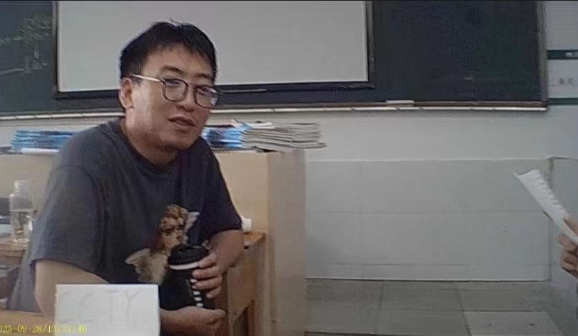

记一嘉翻墙
记者：刘俊辰
他在围墙前徘徊，提着必需的生活用品与其他物品。望着这一面低矮的围墙，他更坚定了回学校上课的决心。可学校已经封控，不允许任何人进出，门口甚至还有警察把守。他咬咬牙，做出了一个决定——翻墙！ 他先将背包抛过围墙，这尚不大难。 但接下来，他需要翻过围墙才能进入学校。他手脚并用，稳稳地攀爬着高耸的围墙。他的手指紧紧扣住墙上的裂缝和突出物，他的肌肉紧绷着，透露出无与伦比的力量。每一次的蹬腿都带着坚定的力道，仿佛他要将整个围墙都推到崩溃的边缘。汗水顺着他的额头沿着咬牙切齿的轮廓滴落下来，却无法浇灭他心中炽热的决心。他注视着围墙顶端，仿佛已经看到了在校等待的我们，并为之奋力攀爬。 他刚翻上围墙，便听到一声呵斥：“站住！！干什么！？”原来是负责在围墙区域巡逻的警察。 面对警察的厉声喝斥，他挺起胸膛，说：“我要回学校，我的孩子们还等着我回去上课！” 幸运的是，警察听了坚定的话语，态度开始缓和。 他们慎重地考虑了一会儿，最终表示对他的理解和支持。他们允许您回到学校。 当他再次出现在我们教室的门口时，满脸疲惫，浑身尘土。我们十分惊异。当我们得知他是翻墙进校时，大笑不已，但更多的是对他的由衷敬意。
韩老师翻墙感想发言
秦好对于韩老师翻墙事件的评论
韩老师的行动不仅仅是一次简单的教学活动，更是对教育事业的坚定信念和责任担当的体现。他明白，教育是培养未来的关键，没有任何困难可以阻挡学生们追求知识和成长的步伐。 他的教育理念和实际行动激励着我们每一个学生，让我们更加珍惜学习的机会，更加努力地投入到学习中去。 通过韩老师的榜样，我们明白到教育工作者的伟大和神圣。他们不仅仅是知识的传递者，更是引导学生成长的引路人。 他们用自己的实际行动践行着教育的使命，为学生创造可能，为社会培养未来的栋梁。 总而言之，韩老师在封控期间翻越围墙给我们上课的行为，让我们深深感受到了教育的力量和温度。 他以无私奉献的精神，用实际行动为我们树立了榜样。我们要倍加珍惜这来之不易的学习机会，努力学习，为韩老师的辛勤付出而自豪！ -----秦好
韩老师专访--应对小丑学生
记者：何陈萱
对待这种学生，方法只有一个，那就是硬式教育，讽刺他们几句便向正常人一样了。 韩老师：“他们像马戏团里的狮子、老虎、猩猩，给他一鞭子，他就能翻跟头、钻火圈、胸口碎大石。 ”在一堂课上，我方记者也是领略到了其中的苦处：小深同学转过身去，对着后排的小晨发出了奇怪的叫声“汪汪汪”，小晨同学抬起手指向他，大声的说到“你就是歌姬”，全班同学哄堂大笑。 韩老师只好用人类智慧的工具——笔，敲敲桌子“两位同学，不上课可以出教室去，不要用你250的大脑在课堂上做一些非人类的行为。”一片沉默，这份安静延续到了下课铃打响。
关于老师--对韩老师的专访
记者：杨仪
通过与韩老师的交流，我们深刻体会到教师是一份责任重大而又充满挑战的工作。 教师需要具备丰富的知识储备和专业素养，同时也需要不断学习和提升自己的能力。 教师不仅仅是知识的传授者，更是引导学生成长的引路人。 每个学生都有自己的特点和需求，教师需要耐心倾听，关注每个学生的个体差异，并通过差异化的教学来满足他们的需求。 韩老师认为，作为一名教师，最重要的是关注每个学生的成长和发展，而不仅仅是传授知识。他强调了师生之间的信任和沟通的重要性，只有建立了良好的关系，才能激发学生的学习兴趣和潜能。 此外，他还强调了多样化的教学方法和教材的重要性，以满足不同学生的需求和特点。

采访瞬间